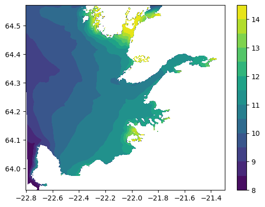

Observation to Model comparison#
Observational datasets (so far)
1997 field data collection
Grundartangi data every 10 minutes going back to the 1970s (with sparser data as you go back)\
import subprocess
import os
import pandas as pd
import netCDF4
import numpy as np
import glob
import time
import matplotlib.pyplot as plt
import copy
import xarray as xr
from datetime import datetime, timedelta
from ocean_c_lab_tools import *
from celluloid import Camera
import PyCO2SYS as csys
import seawater as sw
from roms_regrid import *
f='/expanse/lustre/projects/cos100/uheede/Iceland_observations/Grundartangi_01062012-30072012.xls'
grundartangi = pd.read_excel(f,decimal=',')
xls = pd.ExcelFile('/expanse/lustre/projects/cos100/uheede/Iceland_observations/cruise_1997.xls')
df1 = pd.read_excel(xls, 'Sheet1',decimal=',')
df2 = pd.read_excel(xls, 'Sheet2',decimal=',')
df1
#df1.drop_indexes('index')
| Station | Latitude(∞N) | Longitude(∞E) | mon/day/yr | hh:mm | Ship | Cruise | Bottom Depth[m] | Depth | Temperature | Salinity | Fluor | |
|---|---|---|---|---|---|---|---|---|---|---|---|---|
| 0 | 100 | 64.3633 | -21.5200 | 1997-02-06 | 11:42:00 | D01-1997 | Hval01 | 10 | 0.5 | 0.3263 | 32.0875 | 0.3688 |
| 1 | 100 | 64.3633 | -21.5200 | 1997-02-06 | 11:42:00 | D01-1997 | Hval01 | 10 | 1.0 | 0.2596 | 33.0624 | 0.3733 |
| 2 | 100 | 64.3633 | -21.5200 | 1997-02-06 | 11:42:00 | D01-1997 | Hval01 | 10 | 1.5 | 0.2925 | 33.4925 | 0.4875 |
| 3 | 100 | 64.3633 | -21.5200 | 1997-02-06 | 11:42:00 | D01-1997 | Hval01 | 10 | 2.0 | 0.2311 | 32.7254 | 0.6217 |
| 4 | 100 | 64.3633 | -21.5200 | 1997-02-06 | 11:42:00 | D01-1997 | Hval01 | 10 | 2.5 | 0.2286 | 32.6823 | 0.6661 |
| ... | ... | ... | ... | ... | ... | ... | ... | ... | ... | ... | ... | ... |
| 3568 | 2202 | 64.2750 | -21.9683 | 1997-11-11 | 06:33:00 | D21-1997 | Hval27 | 30 | 32.5 | 7.0250 | 34.3260 | 0.6823 |
| 3569 | 2202 | 64.2750 | -21.9683 | 1997-11-11 | 06:33:00 | D21-1997 | Hval27 | 30 | 33.0 | 7.0412 | 34.3133 | 0.6748 |
| 3570 | 2202 | 64.2750 | -21.9683 | 1997-11-11 | 06:33:00 | D21-1997 | Hval27 | 30 | 33.5 | 7.0465 | 34.3178 | 0.6878 |
| 3571 | 2202 | 64.2750 | -21.9683 | 1997-11-11 | 06:33:00 | D21-1997 | Hval27 | 30 | 34.0 | 7.0509 | 34.3187 | 0.6761 |
| 3572 | 2202 | 64.2750 | -21.9683 | 1997-11-11 | 06:33:00 | D21-1997 | Hval27 | 30 | 34.5 | 7.0562 | 34.3126 | 0.6867 |
3573 rows × 12 columns
obs=xr.Dataset.from_dataframe(df1)
obs=obs.set_index(index=['Depth','mon/day/yr','Bottom Depth[m]'])
obs=obs.unstack('index')
obs=obs.rename(name_dict={'Bottom Depth[m]':'ID','mon/day/yr':'time','Depth':'depth'})
obs['Temperature']=obs['Temperature'].where(obs.depth<obs['ID'])
obs['Salinity']=obs['Salinity'].where(obs.depth<obs['ID'])
plt.plot(obs.depth,obs['Temperature'].isel(ID=0).sel(time=slice('05-06-1997','07-25-1997')).mean('time'))
plt.plot(obs.depth,obs['Temperature'].isel(ID=1).sel(time=slice('05-06-1997','07-25-1997')).mean('time'))
plt.plot(obs.depth,obs['Temperature'].isel(ID=2).sel(time=slice('05-06-1997','07-25-1997')).mean('time'))
[<matplotlib.lines.Line2D at 0x1554deea7b80>]
plt.plot(obs.depth,obs['Salinity'].isel(ID=0).sel(time=slice('05-06-1997','07-25-1997')).mean('time'))
plt.plot(obs.depth,obs['Salinity'].isel(ID=1).sel(time=slice('05-06-1997','07-25-1997')).mean('time'))
plt.plot(obs.depth,obs['Salinity'].isel(ID=2).sel(time=slice('05-06-1997','07-25-1997')).mean('time'))
[<matplotlib.lines.Line2D at 0x1554dee5fe20>]
x=xr.open_mfdataset('/expanse/lustre/projects/cos100/uheede/roms/run/Iceland3/Iceland3_rnd.20120516130000.nc', combine='nested', concat_dim=["time"])
grid=xr.open_mfdataset('/expanse/lustre/projects/cos100/uheede/Iceland3_grd.nc')
x1=xr.open_mfdataset('/expanse/lustre/projects/cos100/uheede/roms/run/Iceland3/z_Iceland3_rnd.201205*.nc', combine='nested', concat_dim=["time"])
x2=xr.open_mfdataset('/expanse/lustre/projects/cos100/uheede/roms/run/Iceland3/z_Iceland3_rnd.201206*.nc', combine='nested', concat_dim=["time"])
x3=xr.open_mfdataset('/expanse/lustre/projects/cos100/uheede/roms/run/Iceland3/z_Iceland3_rnd.201207*.nc', combine='nested', concat_dim=["time"])
x=xr.concat([x1,x2,x3],dim='time')
#x=xr.open_mfdataset('/expanse/lustre/projects/cos100/uheede/roms/run/Iceland3/Iceland3_rnd.20120516130000.nc', combine='nested', concat_dim=["time"])
x=x.mean('time')
grid=xr.open_mfdataset('/expanse/lustre/projects/cos100/uheede/Iceland3_grd.nc')
t=x['t']
s=x['s']
t=roms_regrid(grid,t)
s=roms_regrid(grid,s)
t=t.where(t != 0)
s=s.where(s != 0)
t.load()
#s.load()
<xarray.DataArray (depth: 34, lat: 722, lon: 722)>
array([[[ nan, nan, nan, ..., nan, nan,
nan],
[ nan, nan, nan, ..., nan, nan,
nan],
[ nan, nan, nan, ..., nan, nan,
nan],
...,
[ nan, 9.929144, 9.911392, ..., nan, nan,
nan],
[ nan, nan, nan, ..., nan, nan,
nan],
[ nan, nan, nan, ..., nan, nan,
nan]],
[[ nan, nan, nan, ..., nan, nan,
nan],
[ nan, nan, nan, ..., nan, nan,
nan],
[ nan, nan, nan, ..., nan, nan,
nan],
...
[ nan, nan, nan, ..., nan, nan,
nan],
[ nan, nan, nan, ..., nan, nan,
nan],
[ nan, nan, nan, ..., nan, nan,
nan]],
[[ nan, nan, nan, ..., nan, nan,
nan],
[ nan, nan, nan, ..., nan, nan,
nan],
[ nan, nan, nan, ..., nan, nan,
nan],
...,
[ nan, nan, nan, ..., nan, nan,
nan],
[ nan, nan, nan, ..., nan, nan,
nan],
[ nan, nan, nan, ..., nan, nan,
nan]]], dtype=float32)
Coordinates:
* depth (depth) float32 -0.0 -1.0 -2.0 -3.0 ... -220.0 -240.0 -260.0 -280.0
* lon (lon) float64 337.2 337.2 337.2 337.2 ... 338.7 338.7 338.7 338.7
* lat (lat) float64 63.92 63.92 63.93 63.93 ... 64.57 64.57 64.57 64.57
Attributes:
regrid_method: bilineart1=t.sel(lat=64.2750, method='nearest').sel(lon=360-21.9683, method='nearest')
t2=t.sel(lat=64.39, method='nearest').sel(lon=360-21.52, method='nearest')
t3=t.sel(lat=64.365, method='nearest').sel(lon=360-21.52, method='nearest')
s1=s.sel(lat=64.2750, method='nearest').sel(lon=360-21.9683, method='nearest')
s2=s.sel(lat=64.39, method='nearest').sel(lon=360-21.52, method='nearest')
s3=s.sel(lat=64.365, method='nearest').sel(lon=360-21.52, method='nearest')
t3
<xarray.DataArray (depth: 34)>
array([8.254142 , 8.189458 , 8.090137 , 8.0126505, 7.9500246, 7.8466096,
nan, nan, nan, nan, nan, nan,
nan, nan, nan, nan, nan, nan,
nan, nan, nan, nan, nan, nan,
nan, nan, nan, nan, nan, nan,
nan, nan, nan, nan], dtype=float32)
Coordinates:
* depth (depth) float32 -0.0 -1.0 -2.0 -3.0 ... -220.0 -240.0 -260.0 -280.0
lon float64 338.5
lat float64 64.37
Attributes:
regrid_method: bilinearplt.plot(obs.depth,obs['Temperature'].isel(ID=2).sel(time=slice('05-05-1997','07-30-1997')).mean('time'),color='blue')
plt.plot(t1.depth*(-1),t1,color='blue',linestyle='--')
plt.plot(obs.depth,obs['Temperature'].isel(ID=1).sel(time=slice('05-05-1997','07-30-1997')).mean('time'),color='orange')
plt.plot(t2.depth*(-1),t2,color='orange',linestyle='--')
plt.plot(obs.depth,obs['Temperature'].isel(ID=0).sel(time=slice('05-05-1997','07-30-1997')).mean('time'),color='green')
plt.plot(t3.depth*(-1),t3,color='green',linestyle='--')
plt.title('Temperature profiles with depth')
plt.ylabel('Deg. C')
plt.xlabel('Depth (m)')
Text(0.5, 0, 'Depth (m)')
plt.plot(obs.depth,obs['Salinity'].isel(ID=2).sel(time=slice('05-05-1997','07-30-1997')).mean('time'),color='blue')
plt.plot(s1.depth*(-1),s1,color='blue',linestyle='--')
plt.plot(obs.depth,obs['Salinity'].isel(ID=1).sel(time=slice('05-05-1997','07-30-1997')).mean('time'),color='orange')
plt.plot(s2.depth*(-1),s2,color='orange',linestyle='--')
plt.plot(obs.depth,obs['Salinity'].isel(ID=0).sel(time=slice('05-05-1997','07-30-1997')).mean('time'),color='green')
plt.plot(s3.depth*(-1),s3,color='green',linestyle='--')
plt.title('Salinity profiles with depth')
plt.ylabel('psu')
plt.xlabel('Depth (m)')
Text(0.5, 0, 'Depth (m)')
grundartangi
| Timabil | Flodatafla (m) | Sjavarhaed (m) | Vindur (m/s) | Hvida (m/s) | Vindatt (deg) | Loftthrystingur (hpa) | Lofthiti (degC) | Sjavarhiti (degC) | Selta (PSU) | Unnamed: 10 | |
|---|---|---|---|---|---|---|---|---|---|---|---|
| 0 | 00:00 31.07.2012 | 1.07 | -3 | 1 | 2 | 103 | 1012 | 12.5 | 232 | 0 | |
| 1 | 23:50 30.07.2012 | 1.00 | -3 | 2 | 2 | 115 | 1012 | 12.5 | 232 | 0 | |
| 2 | 23:40 30.07.2012 | 0.93 | -3 | 2 | 3 | 123 | 1012 | 12.4 | 232 | 0 | |
| 3 | 23:30 30.07.2012 | 0.88 | -3 | 2 | 2 | 119 | 1012 | 12.5 | 232 | 0 | |
| 4 | 23:20 30.07.2012 | 0.84 | -3 | 1 | 2 | 117 | 1012 | 12.7 | 232 | 0 | |
| ... | ... | ... | ... | ... | ... | ... | ... | ... | ... | ... | ... |
| 8636 | 00:40 01.06.2012 | 2.56 | -3 | 7 | 9 | 234 | 1026 | 9.3 | 232 | 0 | |
| 8637 | 00:30 01.06.2012 | 2.45 | -3 | 6 | 8 | 232 | 1026 | 9.3 | 232 | 0 | |
| 8638 | 00:20 01.06.2012 | 2.35 | -3 | 7 | 9 | 233 | 1026 | 9.5 | 232 | 0 | |
| 8639 | 00:10 01.06.2012 | 2.24 | -3 | 7 | 9 | 231 | 1026 | 9.7 | 232 | 0 | |
| 8640 | 00:00 01.06.2012 | 2.13 | -3 | 6 | 9 | 232 | 1026 | 9.8 | 232 | 0 |
8641 rows × 11 columns
#plt.plot(grundartangi['Vindatt (deg)'])
from windrose import WindroseAxes
ax = WindroseAxes.from_ax()
ax.bar(grundartangi['Vindatt (deg)'], grundartangi['Vindur (m/s)'], normed=True, opening=0.8, edgecolor='white')
ax.set_legend()
ax.set_title('wind rose for summer winds 2012')
Text(0.5, 1.0, 'wind rose for summer winds 2012')
palette = plt.get_cmap('tab20')
plt.plot(grundartangi[' Flodatafla (m)'],color=palette(1))
plt.title('surface water anomalies (m)')
plt.ylabel('m')
plt.xlabel('time')
Text(0.5, 0, 'time')
plt.plot(grundartangi['Lofthiti (degC)'],color=palette(7))
plt.title('air temperature ')
plt.ylabel('degC')
plt.xlabel('time')
Text(0.5, 0, 'time')
import scipy
from scipy import stats as st
import xesmf as xe
st.mode(grundartangi['Vindatt (deg)'])
u=grundartangi['Vindur (m/s)']*np.cos(grundartangi['Vindatt (deg)'])
v=grundartangi['Vindur (m/s)']*np.sin(grundartangi['Vindatt (deg)'])
era=xr.open_mfdataset('/home/uheede/era5.[6-7]2017.nc', combine='nested', concat_dim=["time"])
u10_carra=xr.open_mfdataset('/expanse/lustre/projects/cos100/uheede/Arctic_datasets/u10_reanalysis.nc')
v10_carra=xr.open_mfdataset('/expanse/lustre/projects/cos100/uheede/Arctic_datasets/v10_reanalysis.nc')
u10_carra = u10_carra.rename({"longitude": "lon", "latitude": "lat"})
lon_min=(u10_carra.lon.min().values)
lon_max=(u10_carra.lon.max().values)
lon_step=((lon_max-lon_min)/len(u10_carra.x))
lat_min=(u10_carra.lat.min().values)
lat_max=(u10_carra.lat.max().values)
lat_step=((lat_max-lat_min)/len(u10_carra.y))
ds_out = xr.Dataset(
{
"lon": (["lon"], np.arange(lon_min, lon_max, lon_step), {"units": "degrees_north"}),
"lat": (["lat"], np.arange(lat_min, lat_max, lat_step), {"units": "degrees_east"}),
}
)
regridder = xe.Regridder(u10_carra, ds_out, "bilinear")
u10_rg=regridder(u10_carra['u10'])
v10_rg=regridder(v10_carra['v10'])
---------------------------------------------------------------------------
KeyboardInterrupt Traceback (most recent call last)
Cell In[8], line 17
8 lat_step=((lat_max-lat_min)/len(u10_carra.y))
10 ds_out = xr.Dataset(
11 {
12 "lon": (["lon"], np.arange(lon_min, lon_max, lon_step), {"units": "degrees_north"}),
13 "lat": (["lat"], np.arange(lat_min, lat_max, lat_step), {"units": "degrees_east"}),
14 }
15 )
---> 17 regridder = xe.Regridder(u10_carra, ds_out, "bilinear")
18 u10_rg=regridder(u10_carra['u10'])
19 v10_rg=regridder(v10_carra['v10'])
File ~/.conda/envs/xarray_new/lib/python3.10/site-packages/xesmf/frontend.py:906, in Regridder.__init__(self, ds_in, ds_out, method, locstream_in, locstream_out, periodic, parallel, **kwargs)
903 grid_out, shape_out, output_dims = ds_to_ESMFgrid(ds_out, need_bounds=need_bounds)
905 # Create the BaseRegridder
--> 906 super().__init__(
907 grid_in,
908 grid_out,
909 method,
910 input_dims=input_dims,
911 output_dims=output_dims,
912 parallel=parallel,
913 **kwargs,
914 )
916 # Record output grid and metadata
917 lon_out, lat_out = _get_lon_lat(ds_out)
File ~/.conda/envs/xarray_new/lib/python3.10/site-packages/xesmf/frontend.py:372, in BaseRegridder.__init__(self, grid_in, grid_out, method, filename, reuse_weights, extrap_method, extrap_dist_exponent, extrap_num_src_pnts, weights, ignore_degenerate, input_dims, output_dims, unmapped_to_nan, parallel)
370 if not parallel:
371 if not reuse_weights and weights is None:
--> 372 weights = self._compute_weights() # Dictionary of weights
373 else:
374 weights = filename if filename is not None else weights
File ~/.conda/envs/xarray_new/lib/python3.10/site-packages/xesmf/frontend.py:439, in BaseRegridder._compute_weights(self)
438 def _compute_weights(self):
--> 439 regrid = esmf_regrid_build(
440 self.grid_in,
441 self.grid_out,
442 self.method,
443 extrap_method=self.extrap_method,
444 extrap_dist_exponent=self.extrap_dist_exponent,
445 extrap_num_src_pnts=self.extrap_num_src_pnts,
446 ignore_degenerate=self.ignore_degenerate,
447 )
449 w = regrid.get_weights_dict(deep_copy=True)
450 esmf_regrid_finalize(regrid) # only need weights, not regrid object
File ~/.conda/envs/xarray_new/lib/python3.10/site-packages/xesmf/backend.py:483, in esmf_regrid_build(sourcegrid, destgrid, method, filename, extra_dims, extrap_method, extrap_dist_exponent, extrap_num_src_pnts, ignore_degenerate)
480 if allow_masked_values:
481 kwargs.update(dict(src_mask_values=[0], dst_mask_values=[0]))
--> 483 regrid = ESMF.Regrid(sourcefield, destfield, **kwargs)
485 return regrid
File ~/.conda/envs/xarray_new/lib/python3.10/site-packages/esmpy/util/decorators.py:59, in initialize.<locals>.new_func(*args, **kwargs)
56 from esmpy.api import esmpymanager
58 esmp = esmpymanager.Manager(debug = False)
---> 59 return func(*args, **kwargs)
File ~/.conda/envs/xarray_new/lib/python3.10/site-packages/esmpy/api/regrid.py:179, in Regrid.__init__(self, srcfield, dstfield, filename, rh_filename, src_mask_values, dst_mask_values, regrid_method, pole_method, regrid_pole_npoints, line_type, norm_type, extrap_method, extrap_num_src_pnts, extrap_dist_exponent, extrap_num_levels, unmapped_action, ignore_degenerate, create_rh, filemode, src_file, dst_file, src_file_type, dst_file_type, factors, large_file, src_frac_field, dst_frac_field)
176 fil = None
177 num_factors = None
--> 179 self._routehandle = ESMP_FieldRegridStore(
180 srcfield,
181 dstfield,
182 srcMaskValues=src_mask_values,
183 dstMaskValues=dst_mask_values,
184 regridmethod=regrid_method,
185 polemethod=pole_method,
186 regridPoleNPnts=regrid_pole_npoints,
187 lineType=line_type,
188 normType=norm_type,
189 extrapMethod=extrap_method,
190 extrapNumSrcPnts=extrap_num_src_pnts,
191 extrapDistExponent=extrap_dist_exponent,
192 extrapNumLevels=extrap_num_levels,
193 unmappedaction=unmapped_action,
194 ignoreDegenerate=ignore_degenerate,
195 factorList=fl,
196 factorIndexList=fil,
197 numFactors=num_factors,
198 srcFracField=src_frac_field,
199 dstFracField=dst_frac_field
200 )
202 # If we are returning factors, store them and cast/convert from
203 # ctypes
204 if factors:
File ~/.conda/envs/xarray_new/lib/python3.10/site-packages/esmpy/interface/cbindings.py:2111, in ESMP_FieldRegridStore(srcField, dstField, srcMaskValues, dstMaskValues, regridmethod, polemethod, regridPoleNPnts, lineType, normType, extrapMethod, extrapNumSrcPnts, extrapDistExponent, extrapNumLevels, unmappedaction, ignoreDegenerate, factorList, factorIndexList, numFactors, srcFracField, dstFracField)
2108 arg_factorList = ct.byref(factorList)
2109 arg_factorIndexList = ct.byref(factorIndexList)
-> 2111 rc = _ESMF.ESMC_FieldRegridStore(srcField.struct.ptr,
2112 dstField.struct.ptr,
2113 srcMaskValues_i,
2114 dstMaskValues_i,
2115 ct.byref(routehandle),
2116 regridmethod,
2117 polemethod,
2118 regridPoleNPnts_ct,
2119 lineType,
2120 normType,
2121 extrapMethod,
2122 extrapNumSrcPnts,
2123 extrapDistExponent,
2124 extrapNumLevels,
2125 unmappedaction,
2126 ignoreDegenerate,
2127 arg_factorList,
2128 arg_factorIndexList,
2129 ct.byref(numfac),
2130 srcFracField,
2131 dstFracField)
2133 handle_esmf_error(rc, 'ESMC_FieldRegridStore')
2135 # Assign the outgoing pointer for the factor count if we are returning
2136 # factors.
KeyboardInterrupt:
u10=era['u10'].sel(latitude=64.3,method='nearest').sel(longitude=-21.7,method='nearest').load()
v10=era['v10'].sel(latitude=64.3,method='nearest').sel(longitude=-21.7,method='nearest').load()
#u10_cr=u10_rg.sel(lat=64.3,method='nearest').sel(lon=360-21.7,method='nearest').load()
#v10_cr=v10_rg.sel(lat=64.3,method='nearest').sel(lon=360-21.7,method='nearest').load()
#u10_rg.to_netcdf('/expanse/lustre/projects/cos100/uheede/Arctic_datasets/u10_reanalysis_regrid.nc')
#v10_rg.to_netcdf('/expanse/lustre/projects/cos100/uheede/Arctic_datasets/v10_reanalysis_regrid.nc')
u10_cr=u10_rg.sel(lat=64.3,method='nearest').sel(lon=360-21.7,method='nearest')
v10_cr=v10_rg.sel(lat=64.3,method='nearest').sel(lon=360-21.7,method='nearest')
---------------------------------------------------------------------------
NameError Traceback (most recent call last)
Cell In[11], line 1
----> 1 u10_rg.to_netcdf('/expanse/lustre/projects/cos100/uheede/Arctic_datasets/u10_reanalysis_regrid.nc')
2 v10_rg.to_netcdf('/expanse/lustre/projects/cos100/uheede/Arctic_datasets/v10_reanalysis_regrid.nc')
3 u10_cr=u10_rg.sel(lat=64.3,method='nearest').sel(lon=360-21.7,method='nearest')
NameError: name 'u10_rg' is not defined
u10_rg=xr.open_dataset('/expanse/lustre/projects/cos100/uheede/Arctic_datasets/u10_reanalysis_regrid.nc')
u10_cr=u10_rg.sel(lat=64.3,method='nearest').sel(lon=360-21.7,method='nearest')
v10_rg=xr.open_dataset('/expanse/lustre/projects/cos100/uheede/Arctic_datasets/v10_reanalysis_regrid.nc')
v10_cr=v10_rg.sel(lat=64.3,method='nearest').sel(lon=360-21.7,method='nearest')
forecast=xr.open_dataset('/expanse/lustre/projects/cos100/uheede/Arctic_datasets/arome_arctic_lagged_12_h_latest_2_5km_latest.nc')
forecast = forecast.rename({"longitude": "lon", "latitude": "lat"})
#forecast=forecast.assign_coords({"lon": (forecast.lon % 360)})
lon_min=(forecast.lon.min().values)
lon_max=(forecast.lon.max().values)
lon_step=((lon_max-lon_min)/len(forecast.x))
lat_min=(forecast.lat.min().values)
lat_max=(forecast.lat.max().values)
lat_step=((lat_max-lat_min)/len(forecast.y))
ds_out = xr.Dataset(
{
"lon": (["lon"], np.arange(lon_min, lon_max, lon_step), {"units": "degrees_north"}),
"lat": (["lat"], np.arange(lat_min, lat_max, lat_step), {"units": "degrees_east"}),
}
)
regridder = xe.Regridder(forecast, ds_out, "bilinear")
u10_rg_fc=regridder(forecast['x_wind_10m'].isel(ensemble_member=1).squeeze())
u10_rg_fc1=u10_rg_fc.sel(lat=64.3,method='nearest').sel(lon=360-21.7,method='nearest').squeeze()
plt.contourf(u10_rg_fc.lon,u10_rg_fc.lat,u10_rg_fc.squeeze().isel(time=40))
<matplotlib.contour.QuadContourSet at 0x1554c818bb50>
forecast.lon
<xarray.DataArray 'lon' (y: 949, x: 739)>
array([[-17.956718, -17.894133, -17.831565, ..., 18.55296 , 18.587438,
18.621878],
[-17.949161, -17.886511, -17.823877, ..., 18.584611, 18.619092,
18.653536],
[-17.941589, -17.878873, -17.816173, ..., 18.6163 , 18.650784,
18.68523 ],
...,
[ 78.541333, 78.442812, 78.345966, ..., 68.697202, 68.695421,
68.693644],
[ 79.047574, 78.944895, 78.843955, ..., 68.766405, 68.764542,
68.762684],
[ 79.552032, 79.445239, 79.340249, ..., 68.835604, 68.83366 ,
68.83172 ]])
Coordinates:
* x (x) float32 2.786e+05 2.811e+05 2.836e+05 ... 2.121e+06 2.124e+06
* y (y) float32 -8.98e+05 -8.955e+05 -8.93e+05 ... 1.47e+06 1.472e+06
lon (y, x) float64 -17.96 -17.89 -17.83 -17.77 ... 68.84 68.83 68.83
lat (y, x) float64 69.3 69.3 69.29 69.29 ... 71.18 71.15 71.13 71.11
Attributes:
units: degree_east
long_name: longitude
standard_name: longitudetime1=np.arange(0,len(u))
time2=np.arange(0,len(u10)*6,6)
time3=np.arange(0,len(u10_cr['u10']*2/4)*6*3*2/4,6*3*2/4)
plt.plot(time1,u,label='Grundartangi station')
plt.plot(time3,u10_cr['u10'],label='Carra')
plt.plot(time2,u10,label='era5')
plt.title('U-component of the wind')
plt.legend()
plt.ylabel('m/s')
plt.xlabel('10 min intervals since June 1st 2012')
Text(0.5, 0, '10 min intervals since June 1st 2012')
time1=np.arange(0,len(v))
time2=np.arange(0,len(v10)*6,6)
time3=np.arange(0,len(v10_cr['v10']*2/5)*6*3*2/5,6*3*2/5)
plt.plot(time1,u,label='Grundartangi station')
plt.plot(time3,v10_cr['v10'],label='Carra')
plt.plot(time2,v10,label='era5')
plt.title('V-component of the wind')
plt.legend()
---------------------------------------------------------------------------
NameError Traceback (most recent call last)
Cell In[5], line 1
----> 1 time1=np.arange(0,len(v))
2 time2=np.arange(0,len(v10)*6,6)
3 time3=np.arange(0,len(v10_cr['v10']*2/5)*6*3*2/5,6*3*2/5)
NameError: name 'v' is not defined
woa=xr.open_mfdataset('/expanse/lustre/projects/cos100/uheede/WOA_data/*', combine='nested', concat_dim=["time"],decode_times=False)
#roms1=xr.open_mfdataset('/expanse/lustre/projects/cos100/uheede/roms/run/Iceland2_BGC/Iceland2_BGC_rnd.201205*130000.nc', combine='nested', concat_dim=["time"],decode_times=False)
#roms2=xr.open_mfdataset('/expanse/lustre/projects/cos100/uheede/roms/run/Iceland2_BGC/Iceland2_BGC_rnd.201206*130000.nc', combine='nested', concat_dim=["time"],decode_times=False)
#roms3=xr.open_mfdataset('/expanse/lustre/projects/cos100/uheede/roms/run/Iceland2_BGC/Iceland2_BGC_rnd.201207*130000.nc', combine='nested', concat_dim=["time"],decode_times=False)
grid=xr.open_mfdataset('/expanse/lustre/projects/cos100/uheede/roms/work/Iceland2_BGC/INPUT/Iceland2_grd.nc')
filelist=os.listdir('/expanse/lustre/projects/cos100/uheede/roms/run/Iceland2_BGC/HOLD_RND')
roms1=xr.open_mfdataset('/expanse/lustre/projects/cos100/uheede/roms/run/Iceland2_BGC/HOLD_RND/'+str(filelist[0]), combine='nested', concat_dim=["time"],decode_times=False)
t1=roms1['t']
t1=roms_regrid(grid,t1)
t=t1.load()
t.to_netcdf('/expanse/lustre/projects/cos100/uheede/roms/run/Iceland2_BGC/HOLD_RND/'+str(filelist[0])+'_t_regrid')
#for i in np.arange(1,len(filelist)):
# roms1=xr.open_mfdataset('/expanse/lustre/projects/cos100/uheede/roms/run/Iceland2_BGC/HOLD_RND/'+str(filelist[0]), combine='nested', concat_dim=["time"],decode_times=False)
# t1=roms1['t']
# t1=roms_regrid(grid,t1)
# t1=t1.load()
# t1.to_netcdf('/expanse/lustre/projects/cos100/uheede/roms/run/Iceland2_BGC/HOLD_RND/'+str(filelist[0])+'_t_regrid')
# t=xr.concat([t,t1],dim='time')
#t1=roms_regrid(grid,t1)
#t2=roms_regrid(grid,t2)
#t3=roms_regrid(grid,t3)
/home/uheede/.conda/envs/xarray_new/lib/python3.10/site-packages/dask/array/routines.py:325: PerformanceWarning: Increasing number of chunks by factor of 25
intermediate = blockwise(
---------------------------------------------------------------------------
KeyboardInterrupt Traceback (most recent call last)
Cell In[2], line 12
10 t1=roms1['t']
11 t1=roms_regrid(grid,t1)
---> 12 t=t1.load()
13 t.to_netcdf('/expanse/lustre/projects/cos100/uheede/roms/run/Iceland2_BGC/HOLD_RND/'+str(filelist[0])+'_t_regrid')
15 #for i in np.arange(1,len(filelist)):
16 # roms1=xr.open_mfdataset('/expanse/lustre/projects/cos100/uheede/roms/run/Iceland2_BGC/HOLD_RND/'+str(filelist[0]), combine='nested', concat_dim=["time"],decode_times=False)
17 # t1=roms1['t']
(...)
24 #t2=roms_regrid(grid,t2)
25 #t3=roms_regrid(grid,t3)
File ~/.conda/envs/xarray_new/lib/python3.10/site-packages/xarray/core/dataarray.py:1132, in DataArray.load(self, **kwargs)
1114 def load(self, **kwargs) -> Self:
1115 """Manually trigger loading of this array's data from disk or a
1116 remote source into memory and return this array.
1117
(...)
1130 dask.compute
1131 """
-> 1132 ds = self._to_temp_dataset().load(**kwargs)
1133 new = self._from_temp_dataset(ds)
1134 self._variable = new._variable
File ~/.conda/envs/xarray_new/lib/python3.10/site-packages/xarray/core/dataset.py:848, in Dataset.load(self, **kwargs)
845 chunkmanager = get_chunked_array_type(*lazy_data.values())
847 # evaluate all the chunked arrays simultaneously
--> 848 evaluated_data = chunkmanager.compute(*lazy_data.values(), **kwargs)
850 for k, data in zip(lazy_data, evaluated_data):
851 self.variables[k].data = data
File ~/.conda/envs/xarray_new/lib/python3.10/site-packages/xarray/core/daskmanager.py:70, in DaskManager.compute(self, *data, **kwargs)
67 def compute(self, *data: DaskArray, **kwargs) -> tuple[np.ndarray, ...]:
68 from dask.array import compute
---> 70 return compute(*data, **kwargs)
File ~/.conda/envs/xarray_new/lib/python3.10/site-packages/dask/base.py:628, in compute(traverse, optimize_graph, scheduler, get, *args, **kwargs)
625 postcomputes.append(x.__dask_postcompute__())
627 with shorten_traceback():
--> 628 results = schedule(dsk, keys, **kwargs)
630 return repack([f(r, *a) for r, (f, a) in zip(results, postcomputes)])
File ~/.conda/envs/xarray_new/lib/python3.10/site-packages/dask/order.py:153, in order(dsk, dependencies)
151 dsk[root] = (_f, *root_nodes)
152 dependencies[root] = root_nodes
--> 153 o = order(dsk, dependencies)
154 del o[root]
155 return o
File ~/.conda/envs/xarray_new/lib/python3.10/site-packages/dask/order.py:459, in order(dsk, dependencies)
446 for single in sorted(singles_keys, key=lambda x: partition_keys[x]):
447 # We want to run the singles if they are either releasing a
448 # dependency directly or that they may be releasing a
(...)
454 # distinction and we don't have enough data to dermine if
455 # this is worth it.
456 parent = singles[single]
457 if (
458 len(
--> 459 set_difference(
460 set_difference(dependents[parent], result),
461 seen,
462 )
463 )
464 > 1
465 ):
466 later_singles_append(single)
467 continue
KeyboardInterrupt:
range(1,len(filelist))
range(1, 82)
t1=t1.load()
#plot_obs=woa['t_an'].sel(depth=0).mean('time').sel(lat=slice(60,75)).sel(lon=slice(-25,-15))
plot_obs=woa['t_an'].sel(depth=0).mean('time').sel(lat=slice(63.5,65)).sel(lon=slice(-23-5,-20))
plot_model=t.sel(depth=0)
levels=np.arange(8,15,0.5)
cf1=plt.contourf(plot_obs.lon,plot_obs.lat,plot_obs,levels)
cp1=plt.colorbar(cf1)

levels=np.arange(8,15,0.5)
cf1=plt.contourf(plot_model.lon-360,plot_model.lat,plot_model,levels)
cp1=plt.colorbar(cf1)

#plot_obs=woa['t_an'].sel(depth=0).mean('time').sel(lat=slice(60,75)).sel(lon=slice(-25,-15))
plot_obs=woa['t_an'].mean('time').sel(lat=63,method='nearest').sel(lon=-24,method='nearest')
plot_model=t.sel(lat=63, lon=-24)
---------------------------------------------------------------------------
KeyError Traceback (most recent call last)
File ~/.conda/envs/xarray_new/lib/python3.10/site-packages/pandas/core/indexes/base.py:3790, in Index.get_loc(self, key)
3789 try:
-> 3790 return self._engine.get_loc(casted_key)
3791 except KeyError as err:
File index.pyx:152, in pandas._libs.index.IndexEngine.get_loc()
File index.pyx:181, in pandas._libs.index.IndexEngine.get_loc()
File pandas/_libs/hashtable_class_helper.pxi:1698, in pandas._libs.hashtable.Float64HashTable.get_item()
File pandas/_libs/hashtable_class_helper.pxi:1722, in pandas._libs.hashtable.Float64HashTable.get_item()
KeyError: 63.0
The above exception was the direct cause of the following exception:
KeyError Traceback (most recent call last)
File ~/.conda/envs/xarray_new/lib/python3.10/site-packages/xarray/core/indexes.py:772, in PandasIndex.sel(self, labels, method, tolerance)
771 try:
--> 772 indexer = self.index.get_loc(label_value)
773 except KeyError as e:
File ~/.conda/envs/xarray_new/lib/python3.10/site-packages/pandas/core/indexes/base.py:3797, in Index.get_loc(self, key)
3796 raise InvalidIndexError(key)
-> 3797 raise KeyError(key) from err
3798 except TypeError:
3799 # If we have a listlike key, _check_indexing_error will raise
3800 # InvalidIndexError. Otherwise we fall through and re-raise
3801 # the TypeError.
KeyError: 63.0
The above exception was the direct cause of the following exception:
KeyError Traceback (most recent call last)
Cell In[113], line 3
1 #plot_obs=woa['t_an'].sel(depth=0).mean('time').sel(lat=slice(60,75)).sel(lon=slice(-25,-15))
2 plot_obs=woa['t_an'].mean('time').sel(lat=63,method='nearest').sel(lon=-24,method='nearest')
----> 3 plot_model=t.sel(lat=63, lon=-24)
File ~/.conda/envs/xarray_new/lib/python3.10/site-packages/xarray/core/dataarray.py:1617, in DataArray.sel(self, indexers, method, tolerance, drop, **indexers_kwargs)
1501 def sel(
1502 self,
1503 indexers: Mapping[Any, Any] | None = None,
(...)
1507 **indexers_kwargs: Any,
1508 ) -> Self:
1509 """Return a new DataArray whose data is given by selecting index
1510 labels along the specified dimension(s).
1511
(...)
1615 Dimensions without coordinates: points
1616 """
-> 1617 ds = self._to_temp_dataset().sel(
1618 indexers=indexers,
1619 drop=drop,
1620 method=method,
1621 tolerance=tolerance,
1622 **indexers_kwargs,
1623 )
1624 return self._from_temp_dataset(ds)
File ~/.conda/envs/xarray_new/lib/python3.10/site-packages/xarray/core/dataset.py:3074, in Dataset.sel(self, indexers, method, tolerance, drop, **indexers_kwargs)
3006 """Returns a new dataset with each array indexed by tick labels
3007 along the specified dimension(s).
3008
(...)
3071
3072 """
3073 indexers = either_dict_or_kwargs(indexers, indexers_kwargs, "sel")
-> 3074 query_results = map_index_queries(
3075 self, indexers=indexers, method=method, tolerance=tolerance
3076 )
3078 if drop:
3079 no_scalar_variables = {}
File ~/.conda/envs/xarray_new/lib/python3.10/site-packages/xarray/core/indexing.py:193, in map_index_queries(obj, indexers, method, tolerance, **indexers_kwargs)
191 results.append(IndexSelResult(labels))
192 else:
--> 193 results.append(index.sel(labels, **options))
195 merged = merge_sel_results(results)
197 # drop dimension coordinates found in dimension indexers
198 # (also drop multi-index if any)
199 # (.sel() already ensures alignment)
File ~/.conda/envs/xarray_new/lib/python3.10/site-packages/xarray/core/indexes.py:774, in PandasIndex.sel(self, labels, method, tolerance)
772 indexer = self.index.get_loc(label_value)
773 except KeyError as e:
--> 774 raise KeyError(
775 f"not all values found in index {coord_name!r}. "
776 "Try setting the `method` keyword argument (example: method='nearest')."
777 ) from e
779 elif label_array.dtype.kind == "b":
780 indexer = label_array
KeyError: "not all values found in index 'lat'. Try setting the `method` keyword argument (example: method='nearest')."